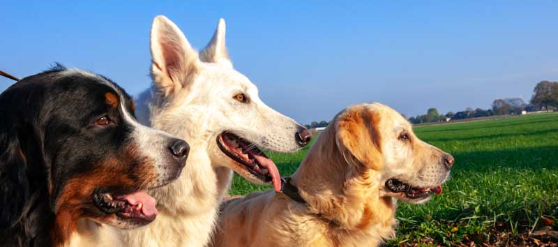
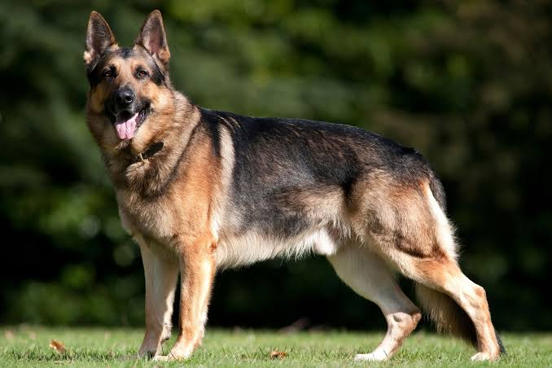

Dogs
Dogs are kind friendly, and loyal to their owners !!! Dogs and human relationship went way back from the time memorial
There are several breeds of dogs in the world today, and they are all unique in their own way !!
Dog Breeds
There are over 300 Dog Breeds recognized worldwide, with most breeds falling into one of 7 breed groups.

The 7 Breed Groups !!!
- Herding Group
Example: Australian Shepherd, Border Collie, Cardigan Welsh Corgi, German Shepherd, Puli, Spanish Water Dog, Belgian Malinois
- Hound Group
Examples:American Foxhound, Beagle, Whippet, Greyhound, Basset Hound, Saluki, Rhodesian Ridgeback
- Non-sporting Group
Examples:Boston Terrier, Dalmatian, French Bulldog, Shiba Inu, Standard Poodle, Bichon Frise
- Sporting Group
Examples:Golden Retriever, Irish Setter, Cocker Spaniel, Brittany, Chesapeake Bay Retriever, English Springer Spaniel
- Terrier Group
Examples:West Highland White Terrier, Russell Terrier, Miniature Schnauzer, American Staffordshire Terrier, Cairn Terrier
- Toy Group
Examples: Pomeranian, Chihuahua, Pug, Yorkshire Terrier, Papillon, Pekingese
- Working Group
Examples: Bernese Mountain Dog, Akita, Boerboel, Giant Schnauzer, Doberman Pinscher, Great Dane, Mastiff
To Learn more
New updates here !!!
German Shepherd:

German Shepherd are breed of working dog developed in Germany from traditional herding and farm dogs. A strongly built and relatively long-bodied dog, the German Shepherd stands 22 to 26 inches (56 to 66 cm) tall at the withers and weighs 75 to 95 pounds (34 to 43 kg). Its dense coat consists of coarse, medium-long, straight or slightly wavy outer hair and soft short inner hair. The colour ranges from white or pale gray to black and is commonly gray and black or black and tan.